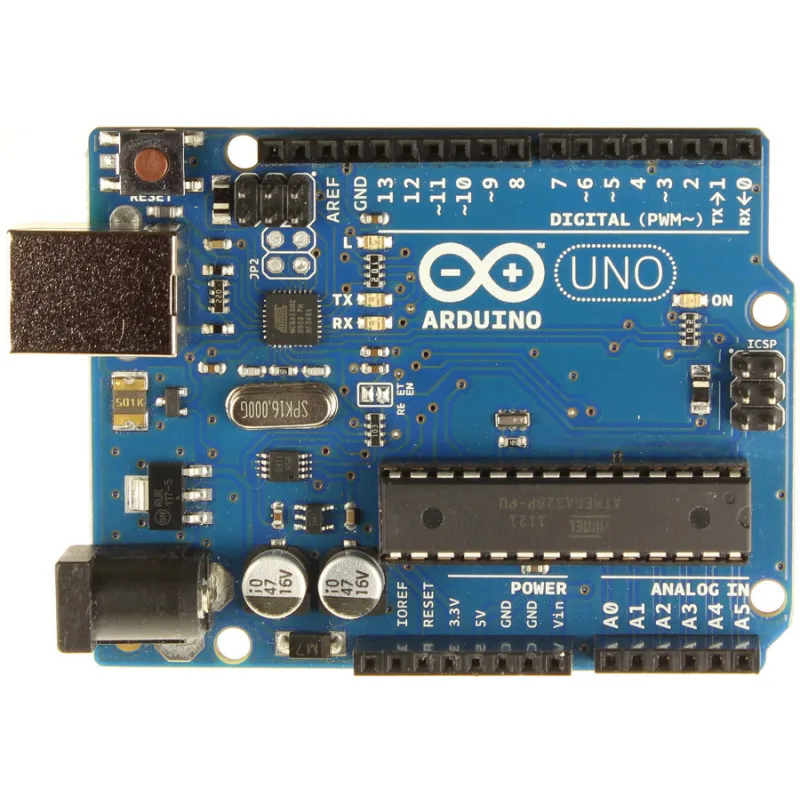
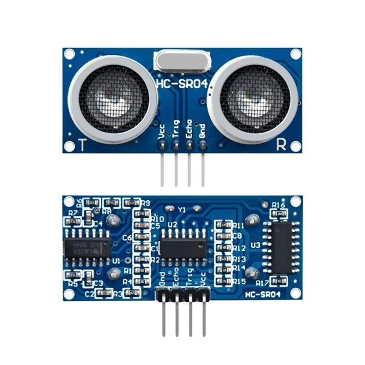
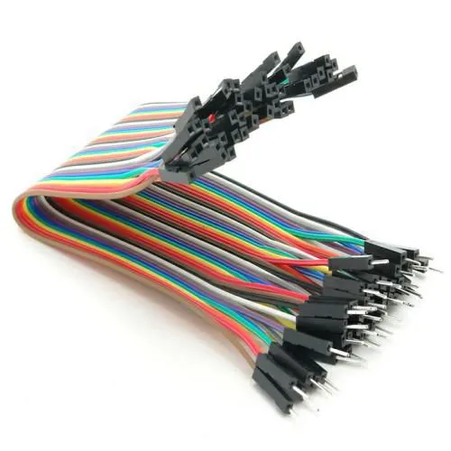
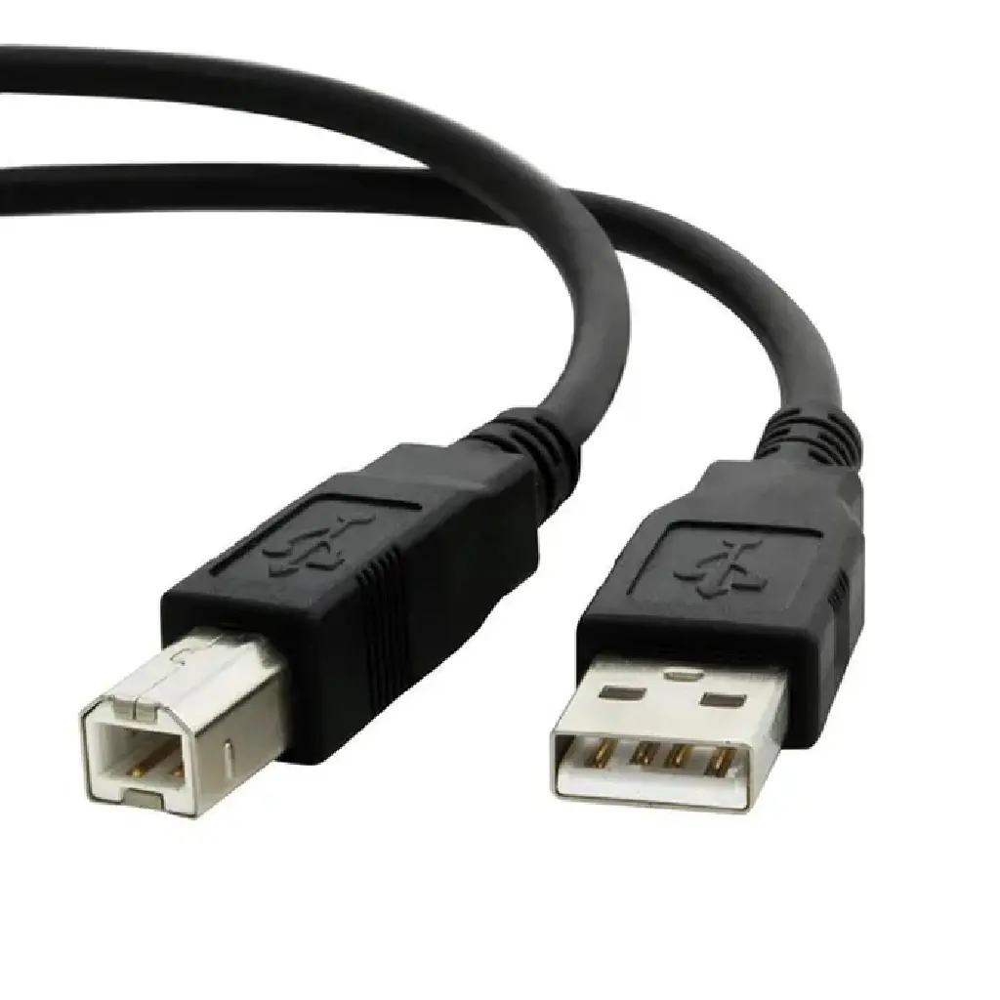
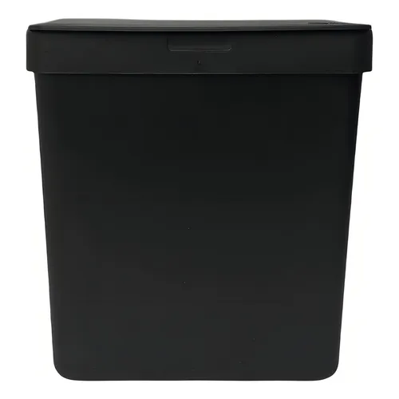
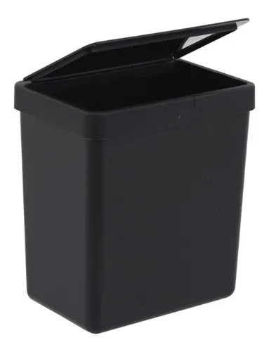
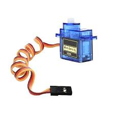
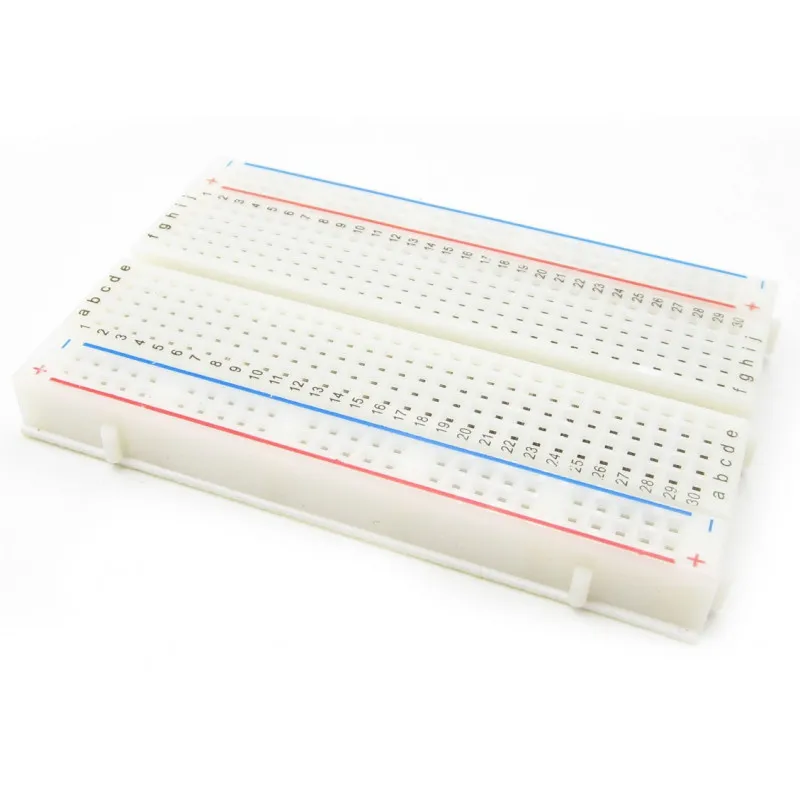

Materiais Utilizados
Estes são os componentes usados na construção da lixeira automática com Arduino:

1x Arduino Uno

1x Sensor Ultrassônico HC-SR04

Jumpers macho/macho e macho/fêmea

1x Cabo USB (fonte de alimentação)

1x Estrutura de Lixeira (reciclável)

1x Tampa articulada para lixeira

1x Servo Motor SG90

1x Protoboard